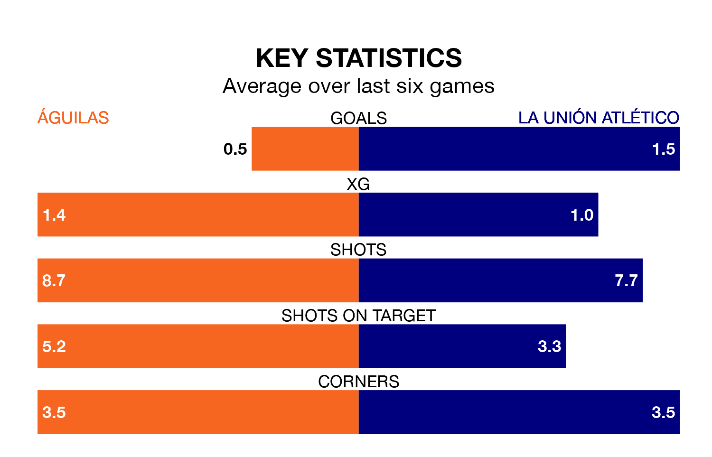

La Unión Atlético face a challenge to maintain their high-scoring form away against a tight Águilas defence on Sunday.
With 34 goals in 30 games, La Unión Atlético are the joint-fourth-highest scorers in the Segunda División RFEF Group 4 ahead of the 5pm kick-off.
They face a Águilas side who have scored 21 in 30 matches, but conceded only 16 goals, putting them joint-top of the league's tightest defences.
Águilas are in disappointing form in the Segunda División RFEF Group 4, with one win and two draws from their last six games.
With four wins and two draws over that period, La Unión Atlético's form is much better – they have taken 14 points from 18, compared to the hosts' five.
Águilas are seventh in the table after 30 games, of which they have won 10 and drawn 12, earning 42 points.
La Unión Atlético are two places behind Águilas in ninth, with 12 wins and four draws putting them on 40 points.
In the last three years, Águilas and La Unión Atlético have played each other on three occasions. They won one each, and they drew once.
Their last meeting was on December 3, when La Unión Atlético won 1-0 at home.
Águilas's last match was on April 7, a 1-0 loss against Antoniano.
La Unión Atlético beat Yeclano Deportivo 3-2 last time out, also on April 7.
Updated: 10:01 (UTC), 12/04/24